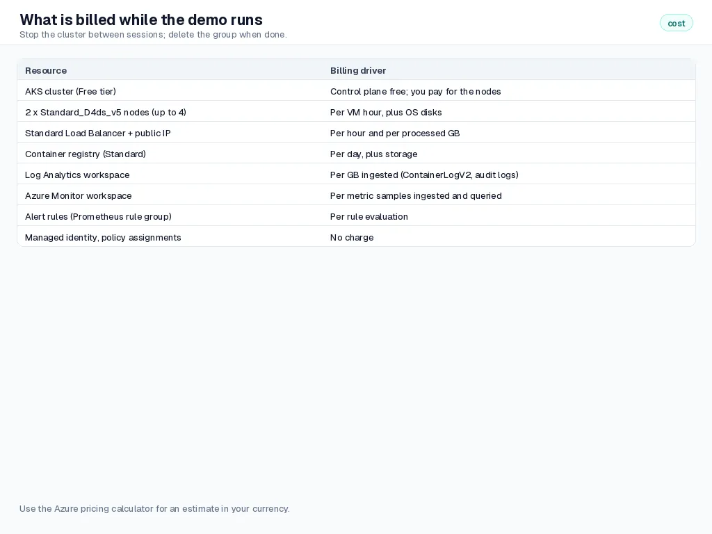
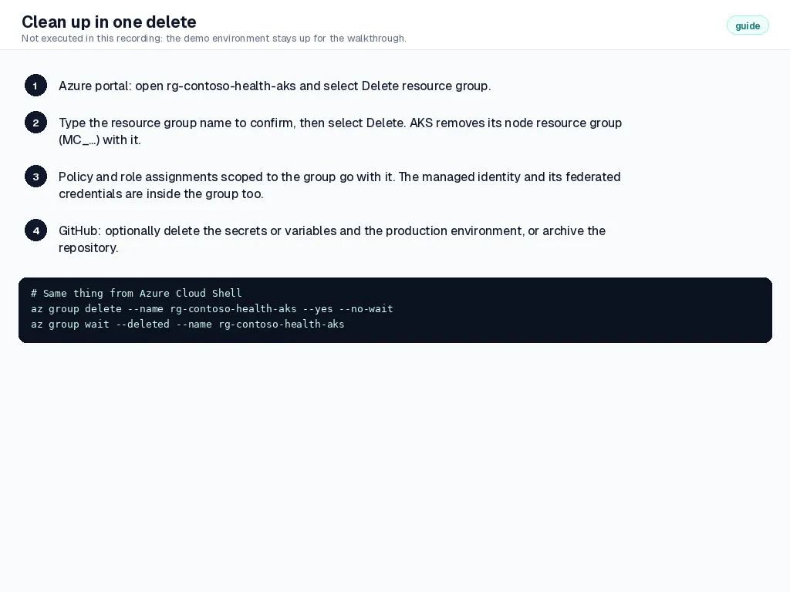

Step 10 of 10
Clean up
Everything the demo created in Azure lives in one resource group, so one delete removes it: the cluster and its node resource group, the registry, the workspaces, the identity with its federated credentials, and the policy and role assignments scoped to the group.
Transcript
Step ten. Clean-up is simple, because everything lives in one resource group.
While the demo runs, the nodes, the load balancer, the registry and monitoring ingestion are billed. Stop the cluster between sessions.
When you are done, delete the resource group in the portal, or run one command in Cloud Shell. We did not run it here, because the demo stays up for the walkthrough.
What you will do#
- Delete
rg-contoso-health-aks. - Optionally remove the repository variables and the environment, or archive the repository.
This step ran fully automated: the GitHub API and the workflows in this repository did the work. The screenshots are public GitHub and app pages captured by the Guide evidence workflow, and the data frames show real output that the pipeline read back from Azure (read-only). The numbered instructions describe the same actions in the portal and GitHub UI.
Pausing instead of deleting#
Between demo sessions you can stop the cluster: Overview, Stop. Stopped nodes are not billed for compute; the registry, workspaces, public IP and disks still are. Start brings it back with the same configuration.
Delete the resource group#
- Open
rg-contoso-health-aksand select Delete resource group. - Type the resource group name to confirm and select Delete. The deletion takes several minutes; AKS removes its node resource group as part of it.
In the recording
What keeps costing money while the demo runs.

s10-01 Clean-up is one resource group delete, in the portal or Cloud Shell. Not executed here: the demo stays up.

s10-02
Tidy up GitHub#
Settings, Secrets and variables, Actions: delete the variables, or leave them; without the identity they cannot be used.
Optionally delete the
productionenvironment, or archive the repository (Settings, General, Archive this repository).
Check your work#
rg-contoso-health-aksandMC_rg-contoso-health-aks_aks-contoso-health_indonesiacentralno longer exist.- Cost Management shows no new charges tagged
workload: contoso-healthafter the deletion completes.
How it works#
Role assignments and policy assignments scoped to a resource group are removed with it. Assignments you made at a higher scope, and anything created outside the group, are not; that is the reason the demo keeps everything inside one group.